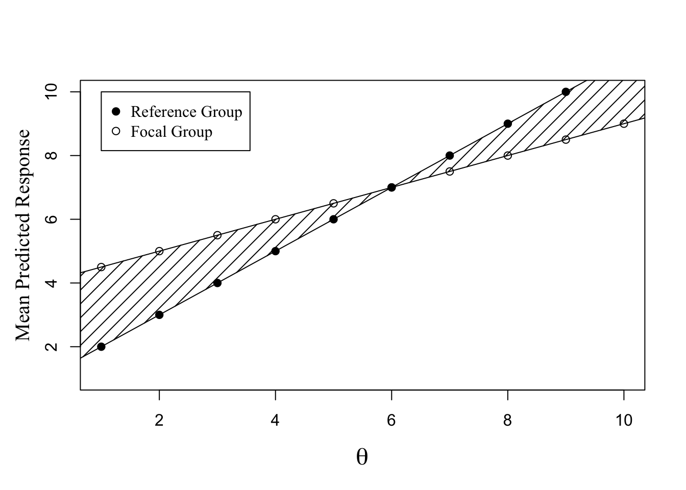

Portfolio 2
suppressWarnings(library(tidyverse))## ── Attaching core tidyverse packages ──────────────────────── tidyverse 2.0.0 ──
## ✔ dplyr 1.1.0 ✔ readr 2.1.4
## ✔ forcats 1.0.0 ✔ stringr 1.5.0
## ✔ ggplot2 3.4.1 ✔ tibble 3.2.1
## ✔ lubridate 1.9.2 ✔ tidyr 1.3.0
## ✔ purrr 1.0.1
## ── Conflicts ────────────────────────────────────────── tidyverse_conflicts() ──
## ✖ dplyr::filter() masks stats::filter()
## ✖ dplyr::lag() masks stats::lag()
## ℹ Use the ]8;;http://conflicted.r-lib.org/conflicted package]8;; to force all conflicts to become errorsIntroduction
So for this portfolio I want to make some graphs and plots for my thesis. I will refine some previous graphics I’ve done as well as add some new ones.
Linear representation of DIF
The first plot I will do will refine this plot that I used previously in my thesis prospectus.
x<-seq(0,11)
y1=1+x
y2=4+(.5*x)
plot(x,y1,pch =19,
ylim =c(1,10),xlim = c(1,10),
xlab = expression(theta), ylab = "",
cex.lab = 1.5)
lines(x,y2,type = "p")
op <- par(family = "Times New Roman")
title(ylab = "Mean Predicted Response",cex.lab=1.25 ,line = 2.4, )
polygon(c(x,rev(x)),c(y2,rev(y1)),
density = 10, angle = 45)
legend(1,10, legend = c(
"Reference Group", "Focal Group"),
pch = c(19,1),
cex=1)
So the plot gets the message across that DIF is captured in the space between the reference and focal groups for a single item in a measurement invariance study. However, I think I can make this look prettier as well as make the code for this less chunky.
#Coordinates for regression lines
x = seq(0,10)
y1 = 1+x
y2 = 4+(.5*x)
dat <- data.frame(x, y1, y2)
#Polygon Coordinates
px<-c(x,rev(x))
py<-c(y2,rev(y1))
pdat<-data.frame(px,py)
#Normal Distribution Coordinates
Nx <- seq(1,10, length = 1000)
Ny <- dnorm(Nx,7.5,1)
Ny <- Ny/max(Ny)*6
dat2 <- data.frame(x = Nx, y = Ny)
dat %>% ggplot(aes(x = x)) +
labs(x = expression(eta),
y = "Mean Predicited Response") +
geom_line(aes(y= y1, color = "Reference"), linewidth = 1) +
geom_line(aes(y = y2, color = "Focal"), linewidth = 1) +
geom_line(data = dat2, aes(x = x, y=y), linetype = "dashed") +
scale_color_manual(name = "",
breaks = c("Reference", "Focal"),
values = c("Reference" = "red", "Focal" = "blue")) +
geom_polygon(data = pdat,
aes(x =px, y =py), fill = "purple", alpha = .25) +
theme(axis.title.x = element_text(size = 15),
legend.key.size = unit(1,"cm"),
legend.text = element_text(size = 10)) 
In comparison to my previous graph, I would say this one looks way cooler. Much more aesthetically pleasing.
Shrunken Estimates Graph
The goal of this graph is meant to show how estimates of dMACS will only be shrunken under my model as the probability of it being zero increases. It will be impossible for my model, dMACS_Shrunk, to inflate estimates.
This graph should be fairly simple to make
#Coordinates
x<-seq(0,1,by=0.1)
y1<-c(1-x)
y2<-c(rep(1,11))
y<-c(y1,y2)
group<-c(rep("dMACS_Shrunk",11),rep("dMACS",11))
dat<-data.frame(x=c(x,x), y, group)
adat<-data.frame(x = x[2:11], y1 = y1[2:11], y2 = y2[2:11])
#Plot
dat %>% ggplot(aes(x = x, y = y, color = group)) +
geom_point(size = 3.5) +
geom_line() +
geom_segment(data = adat,
aes(x = x, y = y2, xend = x, yend = y1),
color = "black",
arrow = arrow(length = unit(0.3, "cm"))) +
labs(x = "Probabiliy of dMACS being zero",
y = "Estimate") +
theme(legend.title=element_blank())
Posterior Distribution…
So for my next portfolio I will show how my prior probabilities of H1(Slab) and H0(Spike) are updated with the data to create posterior probabilities. However, I’m still running through the code of the paper that inspired my method for dMACS_Shrunk to figure out how to do this exactly. Therefore, this portfolio is…
to be continued…